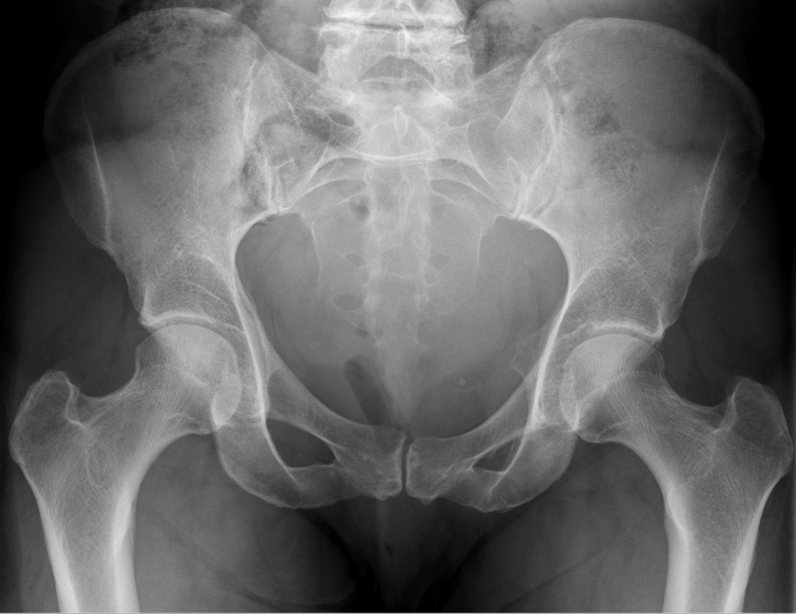

Página 2 · Parte A · Paredes
A casa sobe em três etapas: parede, chão, mobília
- Ao final desta página você vai conseguir dizer: onde a pelve fica dentro de uma pessoa
- quais são as três tarefas que ela executa ao mesmo tempo
- e em que ordem as peças precisam ser montadas para que isso se entenda
Onde a pelve fica dentro de uma pessoa
A pelve é a porção final do tronco. Ela ocupa a transição entre o abdome e os membros inferiores — tudo o que está acima dela é abdome, tudo o que está abaixo já é coxa. Guarde isso antes de qualquer nome de osso, porque é a única frase da página que dispensa referência: a pelve é a junta entre o que carrega e o que anda.
Tarefa 1: receber, estabilizar, transmitir
A primeira tarefa começa com a pelve recebendo todo o peso e toda a pressão que vêm da parte superior do corpo. O segundo tempo é estabilizar essa carga — segurá-la sem que a estrutura se deforme. E o terceiro é transmiti-la aos membros inferiores, que é onde ela finalmente sai. Três tempos, e não uma frase só: recebe → estabiliza → transmite. Separar os três importa porque cada um exige uma coisa diferente da estrutura — receber exige superfície, estabilizar exige rigidez, transmitir exige continuidade. É a exigência de continuidade que vai explicar, adiante, por que a parede precisa formar um círculo fechado e não apenas um conjunto de peças vizinhas.
Tarefas 2 e 3: abrigar e gestar
A segunda tarefa é abrigar: dentro da pelve estão contidas estruturas fundamentais — órgãos, vísceras, nervos e vasos. A terceira é gestar: é nesse espaço que a gestação se desenvolve. Repare no conflito embutido, porque ele é a chave de tudo o que vem: a mesma estrutura tem de ser rígida o bastante para transmitir o peso de um corpo inteiro e complacente o bastante para deixar passar um feto a termo. Nenhuma peça isolada resolve as três tarefas ao mesmo tempo. Por isso a pelve precisa ser muito bem estruturada e muito bem organizada — e é essa organização que se monta peça por peça, cada uma resolvendo uma parte do conflito.
A casa — a metáfora que responde "onde eu estou"
A pelve se constrói como se constrói uma casa. Essa é a bússola, e ela vale do começo ao fim: em qualquer ponto, a pergunta onde eu estou se responde apontando para uma das três etapas.
Primeiro sobem as PAREDES — a pelve óssea, as estruturas ósseas. Depois entra o CHÃO — o assoalho e o períneo. Por último vem a MOBÍLIA — o preenchimento: vísceras, nervos, vasos arteriais, vasos venosos e vasos linfáticos. E a sequência da casa é a sequência do estudo: primeiro a parede, depois o chão, depois a mobília. Nada entra fora de ordem, e essa não é uma preferência estética. É estrutural: o chão se prende na parede, e a mobília se apoia no chão. Quem tenta guardar a posição de um órgão sem ter a parede montada está tentando pendurar um quadro no ar.
O que esta parte da casa entrega, e o que fica para a mobília
A construção que começa aqui entrega paredes, chão e as cordas que penduram. Vísceras, nervos, vasos e linfáticos — a mobília inteira — são o assunto da continuação. Isso fica declarado agora, e não no fim, por um motivo prático: quem procura a mobília numa casa que ainda está na fase de alvenaria conclui que não entendeu, quando na verdade só chegou antes da hora.

CR em AP verdadeiro: anel pélvico completo, sínfise, sacro e acetábulos legíveis.
Wikimedia Commons — Tampon im Röntgenbild des Beckens 45W (CR ap). CC BY-SA 4.0.
Quiz — fixação
A pelve executa três tarefas simultâneas. Qual delas explica a exigência de que a parede óssea forme uma estrutura contínua, e não apenas um conjunto de peças vizinhas?
- Gabarito B. Transmitir carga é uma exigência de continuidade mecânica: para que a força atravesse a estrutura de cima até os fêmures, tem de haver caminho ininterrupto de osso. Peças apenas vizinhas se afastariam sob compressão e a carga se perderia em deslocamento em vez de seguir adiante — é exatamente por isso que a parede precisa fechar um anel.
- (A) exige continência e volume, não continuidade: uma estrutura em forma de tigela, mesmo aberta na frente, ainda abrigaria vísceras.
- (C) exige o oposto da rigidez — precisa de espaço e de alguma complacência; é a tarefa que conflita com a transmissão de carga, e não a que a explica.
- (D) é descrição de posição, não de função; localizar não impõe nenhuma exigência estrutural.
- Por que cair na (A): "abrigar" evoca a imagem de uma caixa fechada, e o aluno traduz "fechada" como "contínua". Só que abrigar pede parede, e transmitir pede circuito — e é a segunda exigência, mais rara, que decide a forma em anel.
A ordem parede → chão → mobília é apresentada como a ordem obrigatória de montagem. Qual afirmação justifica essa ordem por razão estrutural, e não por conveniência didática?
- Gabarito B. A ordem é uma cadeia de dependência de fixação: cada etapa precisa da anterior para ter onde se ancorar. Sem parede, o chão não tem onde se inserir; sem chão, os órgãos não têm sobre o que se apoiar. É por isso que trocar a ordem não é só menos elegante — é impossível de sustentar mentalmente, e é uma das razões pelas quais nomes de órgãos aprendidos antes da moldura óssea não grudam.
- (A) inverte o critério: prioridade de prova é argumento de estudo, não de estrutura, e nada garante que a mobília seja o mais cobrado.
- (C) é verdadeira como fato isolado e irrelevante como justificativa — ser óssea não explica por que a parede tem de vir antes.
- (D) é uma afirmação embriológica que não sustenta a ordem de estudo e, além disso, não é assim que o desenvolvimento acontece.
- Por que cair na (C): o enunciado pede razão estrutural, e "é a parte óssea" soa estrutural. A pegadinha é confundir composição com dependência: o que ordena a montagem não é do que cada etapa é feita, é em que cada etapa se prende.